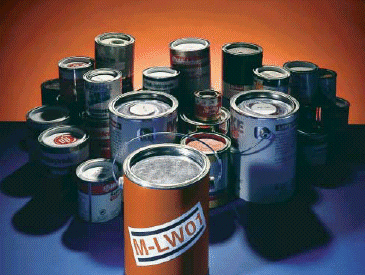
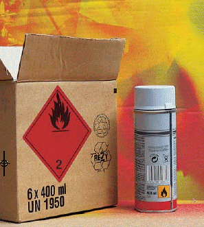

Die Gefährdungsbeurteilung und -dokumentation ist eine anspruchsvolle und arbeitsintensive Aufgabe, die die Unternehmen des Malerund Lackierhandwerks nur schwer allein durchführen können. Deshalb hat der Gesetzgeber auch die Möglichkeit einer "mitgelieferten" Beurteilung vorgesehen. Es ist erlaubt, Gefährdungsbeurteilungen, die der Hersteller oder eine fachkundige Stelle wie GISBAU liefert, zu übernehmen, wenn der Unternehmer seine Tätigkeit entsprechend den dort beschriebenen Angaben und Festlegungen durchführt.
Da die GISBAU-Produktinformationen alle notwendigen Maßnahmen beim Verarbeiten von Be- und Entschichtungsstoffen beschreiben und die Informationen zudem entsprechend der unterschiedlichen Applikationen erarbeitet sind, kann der Unternehmer diese Produkt- Informationen auch als Gefährdungsbeurteilung und -dokumentation verwenden (s. Beispiel im Anhang). Wenn er seine Tätigkeiten mit dem Gefahrstoff - wie in der Information beschrieben - durchführt, kann er dies unter dem Punkt "Hilfe zur Gefährdungsbeurteilung" entsprechend vermerken und ist damit seiner Pflicht zur Durchführung der Gefährdungsbeurteilung nachgekommen. Sollte er von den Maßnahmen der GISBAU-Information in dem einen oder anderen Punkt abweichen, kann er diese Abweichungen ebenfalls über die Gefahrstoff-Software WINGIS dokumentieren. Neben der Möglichkeit, die Gefährdungsbeurteilung zu dokumentieren, findet der Unternehmer in den Produktgruppen für Farben und Lacke zudem eine getrennte Beurteilung - wie von der Gefahrstoffverordnung gefordert - der inhalativen, dermalen und physikalisch-chemischen Gefährdungen vor.
Selbst wenn der Unternehmer umfangreiche Ermittlungen im Rahmen der Gefährdungsbeurteilung, u.a. auch durch Nachfragen beim Hersteller, vornimmt, erfährt er aus den Herstellerangaben keine Hinweise auf weniger gefährliche Produkte, die dem von ihm ausgewählten Produkt vorzuziehen wären, und dass, obwohl die wirkungsvollste Schutzmaßnahme beim Umgang mit Beund Entschichtungsstoffen der Einsatz möglichst gefahrloser Produkte ist.
Bei Farben und Lacken sollten wegen der größeren Gesundheitsgefahr der aromatischen Kohlenwasserstoffe grundsätzlich aromatenhaltige gegen aromatenfreie Produkte ausgetauscht werden.
In einigen Fällen kann darüber hinaus auf lösemittelverdünnbare Produkte verzichtet werden. So sind beispielsweise Dispersionslackfarben den Alkydharzlackfarben vorzuziehen. Beide Produkttypen sind von der technischen Anwendung her vergleichbar.
Innerhalb der unterschiedlichen Produktgruppen, z.B. Klarlacke oder farblose Grundanstriche, werden in der Regel von den Herstellern auch wasserverdünnbare Produkte angeboten. Diese sind aufgrund des erheblich geringeren Lösemittelgehaltes aus Sicht des Gesundheitsschutzes den lösemittelverdünnbaren Farben und Lacken vorzuziehen.
Zu den Entschichtungsprodukten ist anzumerken, dass wegen der gravierenden Gesundheitsgefahren dichlormethanhaltige Abbeizer ab Mitte 2012 im gewerblichen Bereich nicht mehr verwendet werden dürfen. In vielen Fällen kann mechanisch entschichtet werden, wobei - beim Auftreten von Stäuben - Partikelfilter zu tragen sind. Sollten mechanische Verfahren ausscheiden, ist zu prüfen, ob nicht mit Ablaugern gearbeitet werden kann. Kommen solche Produkte wegen der zu entfernenden Altbeschichtung nicht in Betracht, sind dichlormethanfreie - und möglichst auch aromatenfreie - Abbeizmittel zu verwenden.
Bei den Reaktionsharzprodukten auf Epoxid- und Polyurethanharzbasis sollte auf Produkte zurückgegriffen werden, die keine allergieauslösenden Eigenschaften haben. Allergien machen die größten Gefährdungen beim Umgang mit diesen Produkten aus. Darüber hinaus sollte - sofern technisch möglich - auch auf lösemittelhaltige Produkte verzichtet werden.
Ersatzprodukte können allerdings nur dann eingesetzt werden, wenn auch eine technische Vergleichbarkeit zum vorher verwendeten Produkt gegeben ist. Die Entscheidung, ob der Unternehmer ein Ersatzprodukt einsetzen kann, hängt neben einer gesundheitlichen Bewertung aber auch von weiteren Faktoren wie Untergrund, Beanspruchung und vielem mehr ab. Daher bleibt die Entscheidung, welches Produkt im Einzelfall einzusetzen ist, grundsätzlich beim Unternehmer. Schließlich übernimmt er auch die Gewährleistung für die durchgeführten Arbeiten.
Mit der Verpflichtung, in jedem Maler- und Lackiererbetrieb ein Gefahrstoffverzeichnis zu führen, werden viele Unternehmen vor weitere Schwierigkeiten gestellt. Die Tabelle unten zeigt einen Ausschnitt aus einem Gefahrstoffverzeichnis, wie es typischerweise in einem Maler- und Lackiererbetrieb aussehen könnte.
Die dort aufgeführten Begriffe "Mengenbereich" und "Arbeitsbereich" bedürfen - auf mobile Arbeitsplätze angewendet - einer Erläuterung: Die exakte Ermittlung der verwendeten Be- und Entschichtungsmengen würde bei Baustellen oder Sanierungsobjekten einen hohen Zeitaufwand bedeuten. Zudem ist die Aufnahme kleiner Mengen, die häufig nur für den täglichen Bedarf eingekauft werden, nicht sinnvoll. Es können im Gefahrstoffverzeichnis bei Produkten durchaus auch Schätzwerte mit einer größeren Schwankungsbreite, z.B. 100 bis 200 kg, angegeben werden. Zusätzlich kann sich der Unternehmer an den im Vorjahr verbrauchten Mengen orientieren.
Analog ist der Begriff "Arbeitsbereich" zu interpretieren. Der Unternehmer weiß nicht in jedem Fall, welche unterschiedlichen Produkte auf den stetig wechselnden Baustellen verarbeitet werden. Es reicht daher aus, für mobile Arbeitsplätze allgemeinere Angaben wie beispielsweise "Baustelle" einzutragen. Anders verhält es sich allerdings bei stationären Arbeitsplätzen, z.B. Werkstätten, Bauhöfen oder Großbaustellen. Hierfür sind Spezifizierungen erforderlich, zumal an solchen Stellen oft größere Mengen von Gefahrstoffen gelagert werden.
Erfreulicherweise hat der Gesetzgeber aber die Möglichkeit vorgesehen, dass auch eine Sammlung von Informationen, aus denen die gefährlichen Eigenschaften zu ersehen sind, als Gefahrstoffverzeichnis dienen kann, wenn die Arbeits- und Mengenbereiche diesen Informationen hinzugefügt werden. Daher kann eine Sammlung von GISBAU Produktinformationen - versehen mit den Arbeits- und Mengenbereichen - als Gefahrstoffverzeichnis verwendet werden.
Die Gefahrstoffverordnung macht das Tragen von Atemschutz nicht mehr allein abhängig vom Überschreiten der Arbeitsplatzgrenzwerte. Auch Stoffe ohne Grenzwert sind bezüglich ihrer Gefährdung zu beurteilen und entsprechende Maßnahmen festzulegen. Dennoch bleibt es auch zukünftig eine wichtige Aufgabe, für die Stoffe, die einen Arbeitsplatzgrenzwert (AGW) haben, deren Konzentration zu bestimmen.
Zur Ermittlung, welche Mengen an dampf- oder aerosolförmigen Gefahrstoffen bei der Verarbeitung von Be- und Entschichtungsstoffen in der Atemluft auftreten, hat GISBAU Messungen auf Baustellen durchgeführt, deren Ergebnisse im Folgenden dargestellt werden. Die Unternehmen können auf diese Erkenntnisse zurückgreifen und brauchen keine eigenen Messungen mehr vorzunehmen. Die bisherigen Ergebnisse im Bereich der Maler und Lackierer zeigen, dass bei vielen Beschichtungsstoffen, die von Hand aufgetragen werden, nicht mit einer Überschreitung der Grenzwerte zu rechnen ist.
Grundsätzlich ist bei Anwendung von Farben und Lacken im Spritzverfahren mit einer Gesundheitsgefährdung durch Aerosole (u.a. Farbpartikel) zu rechnen. Darüber hinaus ist zu beachten, dass einige Lösemittel nicht nur über die Atemwege aufgenommen werden können. Stoffe, die im Grenzwertekatalog oder den GISBAU-Produktinformationen mit einem H (Hautresorption) versehen sind, werden sogar überwiegend über die Haut aufgenommen. Dieser Aufnahmeweg ist also unbedingt zu berücksichtigen.
| Nr. | Handelsname des Produktes | Inhaltsstoffe aufgeführt im | Gefahren- symbol | R-Sätze | Mengen- bereich | Arbeits- bereich | Sicherheits- datenblatt (einsehbar im Büro bei Frau Schulze) | Verwendung |
| 1 | Grundanstrich- stoffe | GISBAU-Info | Xn | R10, R65 | ca. 300 l | Baustelle | Unigrund weiß, Fa. Meier, vom 28.02.2009 |
Grund-beschichtung für Putzfassaden |
| 2 | Holzlasuren, aromatenarm | GISBAU-Info | Xn | R10, R65 | 50 l | Baustelle | Lasur braun, Fa. Müller, vom 01.03.2009 |
wetter-beständige Holzbeschichtung |
| 3 | Alkydharz- lackfarben, aromatenarm | GISBAU-Info | - | R10 | 250 l | Baustelle | Decklack weiß, Fa. Fischer, vom 15.06.2008 |
Beschichtung von Fenstern und Türen |
| 4 | Dispersions- lackfarben | Sicherheits- datenblatt | - | - | 50 -100 l | Baustelle | Deckfarbe beige, Fa. Klausen, vom 19.02.2009 |
Heizkörper- beschichtung |
| 5 | Abbeizmittel, dichlormethanfrei | Sicherheits- datenblatt | Xi | R10, R37/38 | ca. 200 l | Werkstatt | Dispersion-sentferner Fa. Linke, vom 29.09.2008 |
Entfernen von Dispersions-farben |
| 6 | Spezialver- dünnungsmittel | GISBAU-Info | Xn, F | R11, R20/21, R38, R65 | 100 l | Werkstatt | Verdünner, Fa. Richter, vom 17.02.2009 | Verdünnen von Nitro-zelluloselacken |
Bei lösemittelfreien Dispersions-, Silikat- sowie Naturharzfarben sind die Grenzwerte sicher eingehalten, wenn die Produkte von Hand unter den vom Hersteller angegebenen Bedingungen verarbeitet werden.
Aufgrund der Gesundheitsgefahren der lösemittelhaltigen Produkte werden verstärkt Farben und Lacke mit einem geringen Anteil an organischen Lösemitteln angeboten. Zu diesen Produktgruppen gehören wasserverdünnbare Dispersionslackfarben, farblose und pigmentierte Grundanstrichstoffe, Naturharzfarben, Siliconharzfarben, bläuewidrige Anstrichmittel sowie Klarlacke und Holzlasuren. Messungen bei der Verarbeitung von Hand zeigen keine Grenzwertüberschreitungen; für die Verarbeitung dieser Produkte im Spritzverfahren können aufgrund der geringen Anzahl von Messungen noch keine konkreten Aussagen gemacht werden.
Diese Produkttypen enthalten zwischen ca. 25% organische Lösemittelgemische auf der Basis von Kohlenwasserstoffen. Für entaromatisierte und aromatenarme Alkydharzlackfarben, pigmentierte und farblose Grundanstrichstoffe, Klarlacke, Holzlasuren, Ölfarben und Polymerisatharzfarben lässt sich aufgrund der durchgeführten Messungen feststellen, dass bei der Verwendung dieser Produkte im Handanstrichverfahren bei Verarbeitungsmengen bis etwa 2,5 l pro Schicht die Grenzwerte eingehalten werden.
Entaromatisierte und aromatenarme bläuewidrige Anstrichmittel, farblose Grundanstrichstoffe sowie Klarlacke und Holzlasuren enthalten Lösemittelgehalte bis zu 75%, so dass bei Verarbeitung dieser Produkte von Hand mit einer Überschreitung der Luftgrenzwerte gerechnet werden muss. Bei bläuewidrigen Anstrichmitteln ist darüber hinaus zu beachten, dass diese Produkte grundsätzlich nicht für Hölzer in Innenräumen eingesetzt werden sollten.
Bei Anwendung der entaromatisierten und aromatenarmen Produkte im Spritzverfahren und/oder bei Zugabe von Verdünnern sowie bei ungünstigen Lüftungsbedingungen sind ebenfalls Grenzwertüberschreitungen zu erwarten.
Die Produkte der Gruppen aromatenreiche pigmentierte und farblose Grundanstrichstoffe, Alkydharzlackfarben sowie Klarlacke, Holzlasuren und Polymerisatharzfarben enthalten hohe Anteile an aromatenhaltigen Kohlenwasserstoffen.
Gefahrstoffmessungen haben gezeigt, dass bei der Verarbeitung dieser Produkte von Hand - erst recht bei Zugabe von Verdünnern oder bei ungünstigen Lüftungsbedingungen - die Grenzwerte in der Luft am Arbeitsplatz überschritten werden können. Gleiches gilt auch für die Verarbeitung dieser Produkte im Spritzverfahren.
Neben den bisher beschriebenen Farben und Lacken finden in der Praxis häufig auch Beschichtungsstoffe Anwendung, die als Lösemittel ein Gemisch von verschiedenen organischen Stoffen wie Ketonen (z.B. Aceton), Alkoholen, Ethern, Estern und Kohlenwasserstoffen enthalten. Zu diesen Produktgruppen gehören lösemittelverdünnbare pigmentierte und farblose Grundanstrichstoffe, Klarlacke, Holzlasuren und Polymerisatharzfarben. Für diese Produkte liegen noch keine ausreichenden Messergebnisse vor. Der Unternehmer muss hier also vorerst noch selbst die Gefahrstoffkonzentration ermitteln.
Die Entschichtungsprodukte sind grundsätzlich zu unterteilen in lösemittelfreie Ablauger, für die keine Gefahrstoffmessungen erforderlich sind, und lösemittelhaltige Abbeizmittel. Die Abbeizmittel wiederum werden unterschieden in dichlormethanhaltige und dichlormethanfreie Produkte. Dichlormethanhaltige Abbeizer sollen heute nicht mehr eingesetzt werden, da geeignete Ersatzprodukte zur Verfügung stehen. Ab Mitte 2012 dürfen sie im gewerblichen Bereich nicht mehr verwendet werden.
Die von GISBAU durchgeführten Arbeitsplatzmessungen zeigen, dass bei dichlormethanhaltigen Abbeizern grundsätzlich von einer deutlichen Überschreitung des Luftgrenzwertes von Dichlormethan auszugehen ist. Diese Aussage trifft im Übrigen auch auf Arbeiten im Freien zu, also beispielsweise bei Fassadenreinigungen.
Bei dichlormethanfreien Abbeizern liegen noch nicht so viele Arbeitsplatzmessungen vor, dass eine allgemein gültige Aussage getroffen werden kann. Bis verlässliche Daten vorliegen, sollte der Unternehmer auch bei Verwendung dieser Produkte davon ausgehen, dass die Arbeitsplatzgrenzwerte überschritten werden.
Wenn Maler und Lackierer Reaktionsharzprodukte verarbeiten, handelt es sich meist um Epoxidharze oder Polyurethanharze. Diese lassen sich wiederum in lösemittelfreie und lösemittelhaltige Produkte unterscheiden. Darüber hinaus gibt es auch Dispersionsprodukte, deren Lösemittelgehalt bei maximal 5% liegt.
Orientierende Messungen bei lösemittelfreien Epoxidharz- und Polyurethanharzprodukten zeigen, dass beim Verarbeiten der Produkte von Hand die Grenzwerte eingehalten werden.
Auch bei den entsprechenden Dispersionen ist im Handanstrich nicht mit Grenzwertüberschreitungen der Lösemittel zu rechnen.
Bei lösemittelhaltigen Produkten liegen noch keine aussagekräftigen Messungen in genügender Anzahl vor. Messungen aus anderen Bereichen, in denen lösemittelhaltige Produkte großflächig von Hand verarbeitet wurden, lassen allerdings vermuten, dass die Grenzwerte beispielsweise bei Fußbodenbeschichtungen durchaus überschritten werden können. Diese Vermutung gilt erst recht für die Verarbeitung der Reaktionsharzprodukte im Spritzverfahren. Hier ist zusätzlich mit einer Belastung der Atemluft durch atembare Aerosole der Isocyanate und Epoxidharze zu rechnen. Bei Isocyanaten können diese Aerosole Atemwegsallergien auslösen.
Da an mobilen Arbeitsplätzen, wie sie im Maler- und Lackiererhandwerk überwiegend vorkommen, technische Maßnahmen nur schwer zu realisieren sind, kommt der persönlichen Schutzausrüstung besondere Bedeutung zu. GISBAU legt daher in den Informationen zu den Produktgruppen bzw. den Produkten besonderen Wert auf konkrete Angaben zu diesem Punkt. Es wird demzufolge nicht nur angegeben, dass Atemschutz oder Handschutz getragen werden muss, sondern auch, welcher Atemschutzfilter zu verwenden bzw. welches Handschuhmaterial geeignet ist. Solche detaillierten Angaben sind den Sicherheitsdatenblättern bis heute leider nur selten zu entnehmen.
Zur Frage, welche Schutzhandschuhe bei Tätigkeiten mit Farben und Lacken zu tragen sind, hat GISBAU in WINGIS und unter www.wingis-online.de eine Handschuhdatenbank eingerichtet. Hier findet der Unternehmer vor allem konkrete Handschuhfabrikatempfehlungen, also Produkte unterschiedlicher Handschuhfirmen, für die von ihm verwendeten Be- und Entschichtungsstoffe. Die Datenbank ist auf Basis der Produkt- Codes in Zusammenarbeit mit den Handschuhherstellern entstanden. Dabei geben die Hersteller Empfehlungen ihrer Schutzhandschuhe, deren Tragezeiten sogar zwischen Handauftrag und Spritzanwendung unterscheiden.
Zum Punkt Atemschutz werden in den GISBAU-Informationen konkrete Atemschutzfilter, also beispielsweise Kombinationsfilter A2/P2 angegeben. Immer dann, wenn Beund Entschichtungsstoffe im Spritzverfahren aufgebracht werden, ist - unabhängig davon, ob Grenzwerte existieren - mit einer erheblichen Belastung am Arbeitsplatz durch Aerosole (u.a. Farbpartikel) zu rechnen. Bei solchen Verarbeitungsverfahren sind daher grundsätzlich Partikelfilter - bei zusätzlicher Lösemittelbelastung eine Kombination aus Gas- und Partikelfilter - zu benutzen. Werden klassische Bautenlacke von Hand verarbeitet, kann in der Regel auf das Tragen von Atemschutzfiltern verzichtet werden. Anders verhält es sich mit den Entschichtungsstoffen, also Abbeizmitteln. Hier sollte Atemschutz getragen werden, bei Tätigkeiten mit - nicht mehr erforderlichen - dichlormethanhaltigen Abbeizern sind nur umgebungsluftunabhängige Filtergeräte zu verwenden.
Die gesetzliche Forderung nach produkt- und arbeitsplatzbezogenen Betriebsanweisungen sowie Unterweisungen stellt das Malerund Lackiererhandwerk vor mindestens ebensolche Probleme wie die Gefährdungsbeurteilung oder Arbeitsplatzmessungen. Eine der zentralen Aufgaben von GISBAU ist es daher, dem Unternehmer Entwürfe von Betriebsanweisungen zur Verfügung zu stellen. Die Erstellung produktbezogener Betriebsanweisungen ist für eine zentrale Stelle mit entsprechender Fachkompetenz in Kenntnis der einzelnen Inhaltsstoffe relativ leicht umzusetzen. Fragen ergeben sich allerdings in der Praxis bei der zweiten Forderung, dass Betriebsanweisungen arbeitsplatzbezogen zu erstellen sind.
Um den konkreten Arbeitsplatzbezug herzustellen, müssen die von GISBAU erstellten produkt- und verfahrensbezogenen Betriebsanweisungsentwürfe noch um bestimmte Angaben ergänzt werden. Die Unternehmer müssen Eintragungen wie die Bezeichnung der Baustelle, die Tätigkeit, aber auch das Unfalltelefon oder den Namen des Ersthelfers selbst vornehmen. Durch diese Eintragungen wird aus dem GISBAU-Betriebsanweisungsentwurf eine sowohl produkt- als auch arbeitsplatzbezogene Betriebsanweisung.
Da die Beschäftigten im Maler- und Lackiererhandwerk unter häufig wechselnden Arbeitsbedingungen tätig sind, lässt sich die Forderung nach Betriebsanweisungen für jede unterschiedliche Tätigkeit und jeden Arbeitsplatz so nicht in die Praxis umsetzen. Für verschiedene, jedoch vergleichbare Arbeitsplätze werden also Betriebsanweisungen erstellt, die Gültigkeit für mehere Arbeitsplätze besitzen1). Unter dem Punkt "Baustelle/Tätigkeit" einer Betriebsanweisung muss nicht in jedem Fall die konkrete Baustelle benannt werden. Beim Verarbeiten von Alkydharzlackfarben kann beispielsweise durchaus "Streichen/Rollen auf wechselnden Baustellen im Innenbereich" aufgeführt sein.
Es ist - besonders bei stationären Arbeitsplätzen - vorgesehen, die Betriebsanweisungen im Betrieb am Arbeitsplatz auszuhängen. Bei mobilen Arbeitsplätzen ist eine solche Forderung hingegen nicht praktikabel. Hier können die Anweisungen im Erste-Hilfe-Kasten, im Werkzeug- oder Materialkasten oder auch im Baustellenwagen aufbewahrt werden.
Für die Maler- und Lackierer ist die Unterweisung wegen der häufig wechselnden Arbeitsplätze von besonderer Bedeutung. Es muss jedoch nicht für jeden Arbeitsplatz eine erneute Unterweisung stattfinden, besonders dann nicht, wenn die auszuführenden Arbeiten sich wiederholen.
Bei der Verwendung neuer Produkte oder Änderung des Arbeitsverfahrens ist hingegen in jedem Fall erneut zu unterweisen. Die Forderung, eine Unterweisung mindestens einmal im Jahr durchzuführen, kann für den Bereich der Maler und Lackierer so verstanden werden, dass im Rahmen einer solchen Unterweisung eher grundlegende Kenntnisse beim Umgang mit den Be- und Entschichtungsstoffen vermittelt werden. Zwischen diesen Basisunterweisungen sollten dann - jeweils abhängig vom Arbeitsplatz und von den auszuführenden arbeitsplatzspezifischen Tätigkeiten - kurze und knappe Unterweisungen stattfinden.
Viele lösemittelhaltige Be- und Entschichtungsstoffe sind Gefahrgüter und müssen entsprechend den Vorgaben der Gefahrgutverordnung Straße und Eisenbahn und Binnenschifffahrt (GGVSEB) transportiert werden. Ob es sich bei den Produkten um Gefahrgüter handelt, ist den Sicherheitsdatenblättern der Hersteller oder den GISBAU-Produktinformationen zu entnehmen.
Der Gesetzgeber sieht für den Transport von Gefahrgütern in kleinen Mengen Erleichterungen für die einzelnen Transporte vor. Diese Regelung besitzt im Bereich des Maler- und Lackiererhandwerks eine große Bedeutung. Kleine Mengen bedeutet beispielsweise bei lösemittelhaltigen Farben und Lacken - abhängig von der Verpackungsgruppe der Gefahrgutklasse 3 - 333 oder 1000 Liter pro Transport.
Handelt es sich um einen Kleinmengentransport, sind nur wenige Anforderungen wie Rauchverbot, Ladungssicherung sowie Zusammenladeverbot zu erfüllen.
Werden die Höchstmengen überschritten, müssen weitere Auflagen wie die Ausrüstung der Fahrzeuge (u.a. die Warntafel) und die Dokumentierung des Transportes eingehalten werden.
Die Berufsgenossenschaft der Bauwirtschaft hat speziell zum Thema Kleinmengentransport in der Bauwirtschaft die Broschüre "Transport von Gefahrgütern" (Abruf-Nr. 659.5) herausgegeben. Sie kann bei den im Anhang aufgeführten Bezirksverwaltungen kostenlos angefordert werden.

| 1) | Im Anhang sind einige Betriebsentwürfe für häufig verwendete Produkte aufgeführt. Sämtliche von GISBAU herausgegebene Produktinformationen sind auf der Gefahrtstoff-CD WINGIS oder im Internet unter www.gisbau.de zu erhalten |